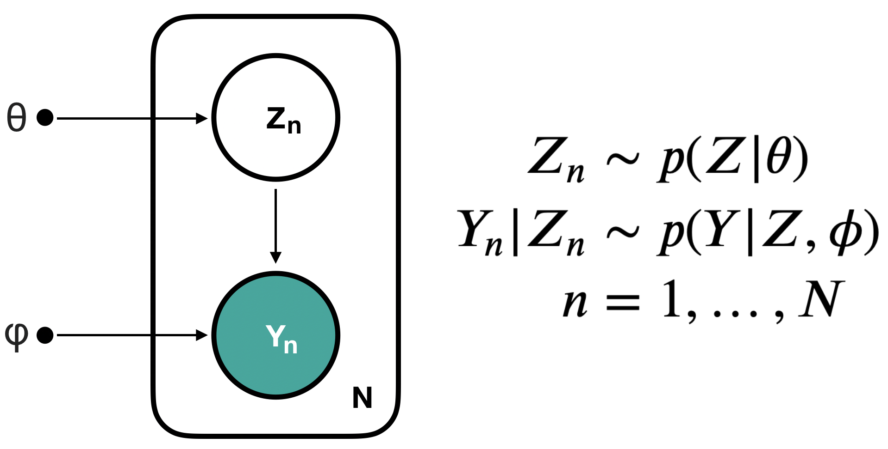
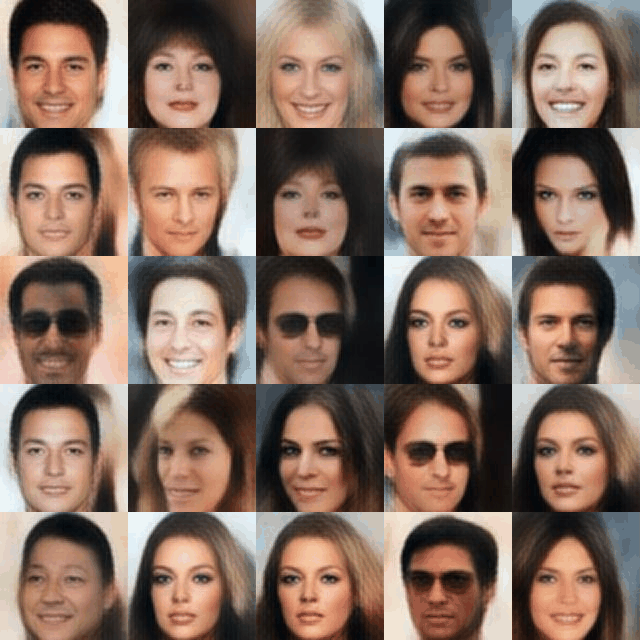
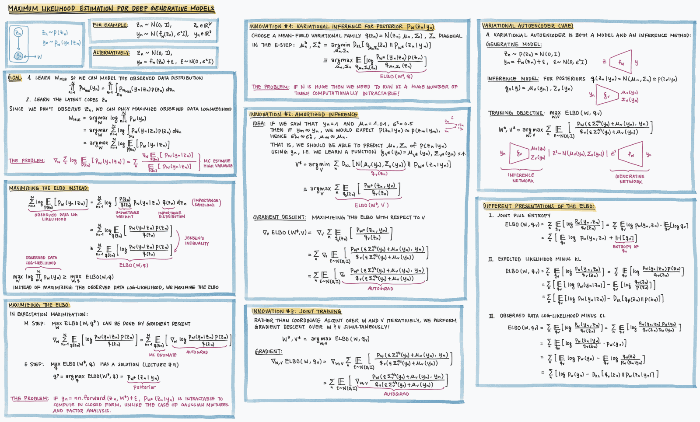

25. Variational Autoencoders#
This chapter is adapted from AM207 (Harvard, Fall 2021). Watch the recorded lecture.
In this chapter
Applications of generative models
Inference for deep generative models: VAEs
25.1. Applications of generative models#
Review of Latent Variable Models#
Recall that models that include an observed variable \(Y\) and at least one unobserved variable \(Z\) are called latent variable models. In general, our model can allow \(Y\) and \(Z\) to interact in many different ways. In Chapter 11, we studied models with one type of interaction:


Factor Analysis Models#
In Chapter 11 and Chapter 12, we concentrated on Gaussian Mixture Models. But in Chapter 11, we also introduced factor analysis models, where we posit that the observed data \(Y\) with many measurements is generated by a small set of unobserved factors \(Z\):
where \(f_{\mu, \Sigma}\) is a linear function of \(Z_n\), in particular, \(f_{\mu, \Sigma}(Z_n) = \mu + \Lambda Z_n\); \(n=1, \ldots, N\), \(Z_n\in \mathbb{R}^{D'}\) and \(Y_n\in \mathbb{R}^{D}\). We typically assume that \(D'\) is much smaller than \(D\).
Applications#
Factor analysis models are useful for biomedical data, where we typically measure a large number of characteristics of a patient (e.g. blood pressure, heart rate, etc), but these characteristics are all generated by a small list of health factors (e.g. diabetes, cancer, hypertension etc). Building a good model means we may be able to infer the list of health factors of a patient from their observed measurements.
Motivation for Generative Models#
The factor analysis model:
where \(f_{\mu, \Sigma}\) is a linear function of \(Z_n\) with parameters \(\mu, \Sigma\).
This is an example of a generative model, that is, after learning the parameters \({\mu, \Sigma}\) of \(f\), we can generate synthetic data by sampling \(Z_n \sim \mathcal{N}(0, I)\) and then generating a synthetic observation by sampling \(Y_n|Z_n \sim \mathcal{N}(f_{\mu, \Sigma}(Z_n), \Phi)\).
In many applications, like health care, where data collection is an financially and time-wise costly operation, synthetic data from a generative model can be extremely useful!
Generative models can also be used to perform imputation of missing data (i.e. fill-in missing covariates of observed data).
Motivation for Deep Generative Models#
The problem with the factor analysis model is that marginal distribution of the data \(Y\) is a Gaussian distribution, since \(Y\) is the result of a Gaussian distribution \(\mathcal{N}(0, I)\) transformed linearly by \(f_{\mu, \Sigma}\). But in practice, the distribution of real data is complex! That is, we need nonlinear transformations.
A deep generative model can be defined as follows:
where \(f\) is a nonlinear function of \(Z_n\), parametrized by a neural network with weights \(\mathbf{W}\). The deep generative model we will study in this chapter, variational autoencoders, will have exactly this generative model.
Generating Data with Variational Autoencoders#
For example, if we train a deep generative model (a VAE) to capture the distribution of a set of image data consisting of celebrity faces, we can use this generative model to generate realistic looking synthetic faces:


25.2. Inference for deep generative models: VAEs#
Expectation Maximization: Estimating the MLE for Latent Variable Models#
Given a deep latent variable model \(p(Y, Z| \mathbf{W}) = p(Y | f_\mathbf{W}(Z)) p(Z)\), we are interested computing the MLE of parameters \(\mathbf{W}\), i.e. the parameters that maximizes the likelihood of the observed data:
where \(\Omega_Z\) is the domain of \(Z\).
In the case of factor analysis models and mixture of Gaussian models, we used Expectation Maximization in order to maximize a lower bound of the observed data log-likelihood, the ELBO. How will this work for deep latent variable models?


25.3. Further Reading#
Variational Autoencoders
(Original VAE paper) Auto-Encoding Variational Bayes
(Thorough) An Introduction to Variational Autoencoders
(Thorough) Tutorial on Variational Autoencoders
(First Section is Introductory) A Tutorial on Information Maximizing Variational Autoencoders (InfoVAE)
(Implementation) Example Implementation on Autograd’s Github